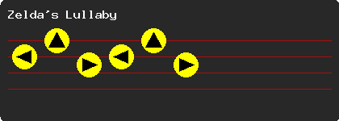
The first song you learn is Zelda's Lullaby. Play this song any time you see a Triforce symbol, as it will usually cause something good to happen.
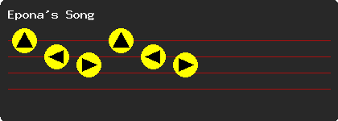
Play the song anywhere in Hyrule Field to call Epona to you. You can also play it in front of a cow, and it will give you Lon Lon Milk.
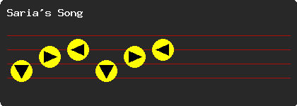
Seek out Saria in the Lost Woods near Kokiri. Follow the sound of the music through the tunnels so you don't get lost, and you'll eventually find your way to the Secret Meadow. At the end of this maze, she will be
chilling out playing her song. Talk to her to acquire it.
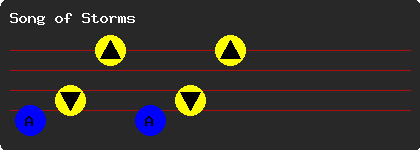
You can learn this song only as Adult Link. First you need to head to Kakariko Village and enter the windmill. The man inside of the windmill will tell you about a song a kid played that made the windmill spin
faster. Pull out your ocarina and he teaches you the Song of Storms.
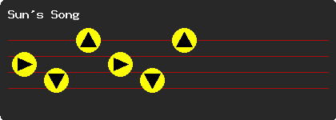
You can learn this song by going to Kakariko Village and heading to the Graveyard. This song is useful for freezing the undead and turning day into night or vice versa.
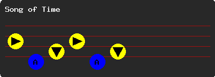
This song is taught to you by Princess Zelda after you retrieve the Ocarina of Time from the moat in front of Hyrule Castle Town. It can be used to make blocks disappear or appear in certain locations, which Navi
will alert you to by hovering over the spot.
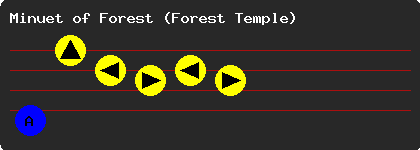
This song is given to you by Sheik when you wander into the area at the end of the Secret Meadow where you acquired Saria's Song. This song will warp you back at the entrance of the Forest Temple.
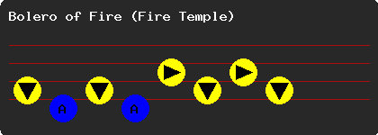
This song will be taught to you by Sheik when you enter the Death Mountain Crater. This song will warp you back at the entrance of the Fire Temple.
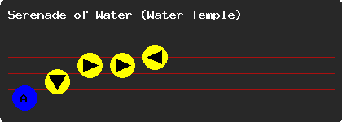
This song will be awarded to you by Sheik. This will transport you to Lake Hylia, nearby the entrance to the Water Temple.
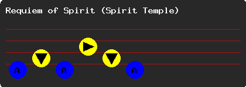
This is a song that will be taught to you by Sheik upon your arrival at the Spirit Temple. This song warps you back here at the entrance of the Spirit Temple. You will need this song as Young Link to return for the
Silver Gauntlets.
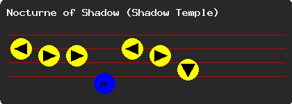
Taught to you by Sheik when you return to Kakariko Village after having finished the Water Temple. This song warps you to the entrance of the Shadow Temple, on the ledge above the Kakariko Graveyard.
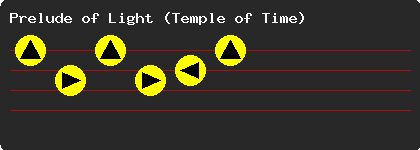
Sheik will sneak up on you to teach you this song when you return to the Temple of Time as an Adult to replace the Master Sword. This handy song will warp you back to the Temple of Time whenever you want.